Lion

| Scientific name | Panthera leo |
| Habitat | Savannah, grasslands |
| Diet | Carnivore |
| Lifespan | 10–14 years |
Lion
Lions are large social cats native to Africa, living in prides and known for their roar and hunting skills.
Tiger
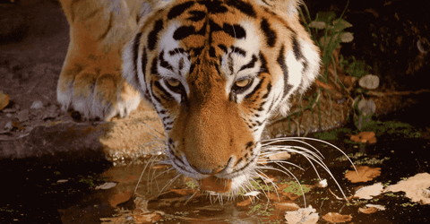| Scientific name | Panthera tigris |
| Habitat | Forests, grasslands |
| Diet | Carnivore |
| Lifespan | 8–10 years |
Tiger
The tiger is the largest living cat species, with distinctive orange and black stripes, mainly found in Asia.
Elephant
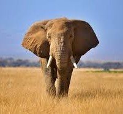| Scientific name | Loxodonta africana / Elephas maximus |
| Habitat | Forests, savannahs |
| Diet | Herbivore |
| Lifespan | 60–70 years |
Elephant
Elephants are intelligent, social mammals with long trunks and tusks, found in Asia and Africa.
Orangutan
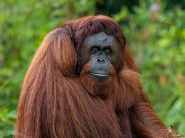| Scientific name | Pongo pygmaeus / Pongo abelii |
| Habitat | Tropical rainforests |
| Diet | Omnivore (fruit, leaves, insects) |
| Lifespan | 30–40 years |
Orangutan
Great apes living in the rainforests of Borneo and Sumatra, known for their intelligence and arboreal lifestyle.
Polar Bear

| Scientific name | Ursus maritimus |
| Habitat | Arctic ice regions |
| Diet | Carnivore |
| Lifespan | 20–25 years |
Polar Bear
Polar bears are large carnivorous bears that hunt seals on Arctic ice and are highly adapted to cold climates.
California Condor
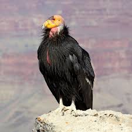| Scientific name | Gymnogyps californianus |
| Habitat | Rocky mountains, canyons |
| Diet | Scavenger |
| Lifespan | 60 years |
California Condor
North America’s largest flying bird with a wingspan up to 3 meters, feeding on carrion.
Yellow-eyed Penguin
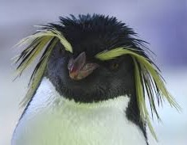| Scientific name | Megadyptes antipodes |
| Habitat | Coastal forests and beaches |
| Diet | Carnivore (fish, squid) |
| Lifespan | 15–20 years |
Yellow-eyed Penguin
Endemic to New Zealand, this penguin species has pale yellow eyes and is highly threatened by habitat loss.
Hawksbill Turtle

| Scientific name | Eretmochelys imbricata |
| Habitat | Coral reefs |
| Diet | Omnivore (sponges, algae) |
| Lifespan | 30–50 years |
Hawksbill Turtle
A critically endangered sea turtle inhabiting tropical coral reefs, recognized for its patterned shell.
Komodo Dragon
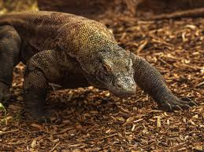| Scientific name | Varanus komodoensis |
| Habitat | Indonesian islands, dry forests |
| Diet | Carnivore |
| Lifespan | 30 years |
Komodo Dragon
The world’s largest lizard, living in Indonesia, preys on deer and pigs using venomous bites.
Axolotl
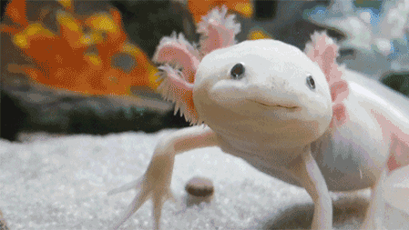| Scientific name | Ambystoma mexicanum |
| Habitat | Lakes and canals in Mexico |
| Diet | Carnivore |
| Lifespan | 10–15 years |
Axolotl
An aquatic salamander known for its regenerative abilities and staying in larval form throughout life.
Golden Frog

| Scientific name | Atelopus zeteki |
| Habitat | Cloud forests of Panama |
| Diet | Carnivore (insects) |
| Lifespan | 5–7 years |
Golden Frog
A small, brightly colored amphibian endemic to Panama, threatened by habitat loss and chytrid fungus.
Coelacanth
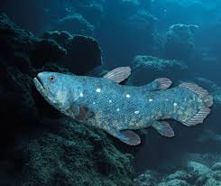| Scientific name | Latimeria chalumnae |
| Habitat | Deep ocean near Africa |
| Diet | Carnivore |
| Lifespan | 60 years |
Coelacanth
Once thought extinct, this ancient deep-sea fish provides insight into early vertebrate evolution.
Sawfish
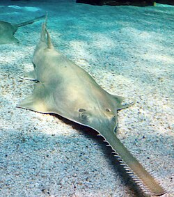| Scientific name | Pristidae |
| Habitat | Coastal tropical waters |
| Diet | Carnivore |
| Lifespan | 30 years |
Sawfish
Elongated fish with a toothed rostrum used for hunting, critically endangered due to overfishing.
Giant Squid
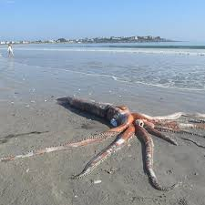| Scientific name | Architeuthis dux |
| Habitat | Deep ocean |
| Diet | Carnivore |
| Lifespan | 5 years |
Giant Squid
A deep-sea invertebrate with massive size and long tentacles, rarely seen by humans.
Monarch Butterfly
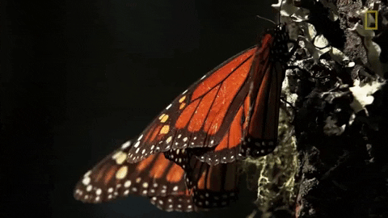| Scientific name | Danaus plexippus |
| Habitat | North American meadows and gardens |
| Diet | Nectar |
| Lifespan | 6–8 weeks |
Monarch Butterfly
Famous for its long migration, this butterfly is endangered due to habitat destruction and pesticides.